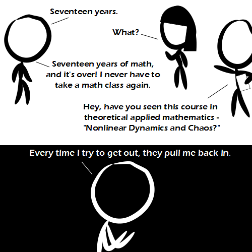

Comic JK 822
When I Feel Like It
⇤
<
?
>
⇥

⇤
<
?
>
⇥
Forum
.
RSS
.
Digg
.
Facebook
.
Reddit
.
Twitter
.
Stumbleupon
Enter your thoughts on number 822 here. Please, no spamming, trolling, phreaking, or thinking that your calculator will save you now. Your mother calculates by counting dorky college boys. What calc do you use in that class? >Linux Mint Debian Edition >>TI-314159+ >>Python, and Wolfram Alpha. >>a huge breadboard of 555 timers, a power supply and 1 LED. >>>+1 >>Haskell >A Bioneural Network. Often called a brain. >A butterfly? >>XKCD reference FTW >A particle accelerator. >your brain >I rewrote parts of the beginning of the universe such that the answers were already done for me. >>Second XKCD reference to the same comic. You lose. >A Casio fx-100C which is over twenty years old and still on its first battery (which probably shows how much it gets used). > A solar powered casio, around 30 old, still going perfectly. >> A human powered slide rule... still in mint condition. >>> You don't use calculators in any math class except for things like numerical methods. If you do, the instructor is incompetent. >I use an HP-48G that I bought in 1995. Aside from replacing batteries and the speaker dying out (which made it less fun to play Galaga) and the notification icons getting stuck on for some reason, it's held up pretty damn well. Still does more than most calculators out there (and more than some apps on my Droid) and no one ever wants to borrow it because it uses RPN Seriously, what the hell is this shit?